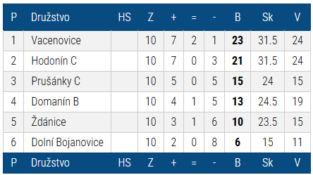

Šachový klub
Dolní Bojanovice
Úvod
Aktuální ročník
Minulé ročníky
Štěpánský turnaj
O klubu
Odkazy
Kontakty
2024/2025
2023/2024
2022/2023
2021/2022
2020/2021
2019/2020
2018/2019
2017/2018
2016/2017
2015/2016
2014/2015
2013/2014
2012/2013
2011/2012
2010/2011
2009/2010
2008/2009
2007/2008
2006/2007
2005/2006
2004/2005
Ročník 2011/2012
Přehled sezóny 2011/2012 na www.chess.cz
Okresní přebor II. 2011_12 - Hodonín
